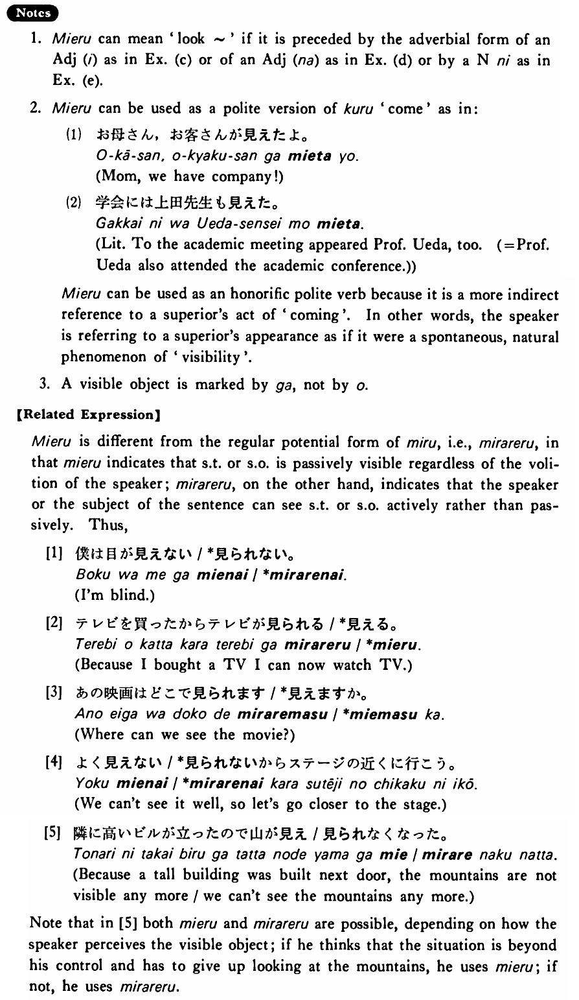

見える・みえる (B. 243)
- (ksa).
- 私（に）は遠くの物がよく見える・見えます。
- To me distant objects are very visible.
- (ksb).
- 窓から（は）海が見える・見えます。
- From the window the ocean is visible.
- (ksc).
- 今日は山が近く見える・見えます。
- Today the mountains look near.
- (a).
- 私には木の上の小さな鳥が見えた。
- I could see small birds on the tree.
- (b).
- 東京タワーからは東京の町がよく見える。
- From Tokyo Tower you can get a good view of the towns of Tokyo.
- (c).
- あの人は年よりずっと若く見える。
- He looks much younger than his age.
- (d).
- 女の人は夜奇麗に見える。
- Women look beautiful at night.
- (e).
- 中島さんは学生に見える。
- Mr. Nakajima looks like a student.
